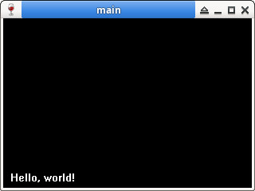

Steward
分享是一種喜悅、更是一種幸福
程式語言 - ObjAsm - OpenGL 1.0 - Use XFont
參考資訊：
https://github.com/ObjAsm
https://objasm.x10host.com/index.htm
https://github.com/gamedev-net/nehe-opengl
main.S
%include @Environ(OBJASM_PATH)/Code/Macros/Model.inc
SysSetup OOP, WIN32_OPENGL, ANSI_STRING
MakeObjects Primer
Object MyApp, , Primer
RedefineMethod Init
StaticMethod Run
StaticMethod WndProc, UINT, WPARAM, LPARAM
DefineVariable hDC, HDC, 0
DefineVariable hRC, HGLRC, 0
DefineVariable hWnd, HWND, 0
DefineVariable base, DWORD, 0
DefineVariable font, DWORD, 0
DefineVariable pDefWndProc, DWORD, 0
ObjectEnd
Method MyApp.Init, uses esi
local w:DWORD
local h:DWORD
local fmt:DWORD
local pfd:PIXELFORMATDESCRIPTOR
local top:REAL8
local right:REAL8
local mtop:REAL8
local mright:REAL8
local rc:RECT
SetObject esi
mov w, 320
mov h, 240
invoke CreateWindowEx, WS_EX_LEFT, WC_DIALOG, $OfsCStr("main"), WS_OVERLAPPEDWINDOW or WS_VISIBLE, 0, 0, w, h, NULL, NULL, NULL, pSelf
mov [esi].hWnd, eax
invoke SetWindowLong, [esi].hWnd, GWL_WNDPROC, $MethodAddr(MyApp.WndProc)
mov [esi].pDefWndProc, eax
lea edi, pfd
mov ecx, sizeof PIXELFORMATDESCRIPTOR
xor eax, eax
rep stosb
mov pfd.nSize, sizeof PIXELFORMATDESCRIPTOR
mov pfd.nVersion, 1
mov pfd.dwFlags, PFD_DRAW_TO_WINDOW or PFD_SUPPORT_OPENGL or PFD_DOUBLEBUFFER
mov pfd.iPixelType, PFD_TYPE_RGBA
mov pfd.cColorBits, 16
mov pfd.cDepthBits, 16
mov pfd.dwLayerMask, PFD_MAIN_PLANE
invoke GetDC, [esi].hWnd
mov [esi].hDC, eax
invoke ChoosePixelFormat, [esi].hDC, addr pfd
mov fmt, eax
invoke SetPixelFormat, [esi].hDC, fmt, addr pfd
invoke wglCreateContext, [esi].hDC
mov [esi].hRC, eax
invoke wglMakeCurrent, [esi].hDC, [esi].hRC
invoke glGenLists, 96
mov [esi].base, eax
invoke CreateFontA, 32, 0, 0, 0, FW_NORMAL, FALSE, FALSE, FALSE, ANSI_CHARSET, OUT_DEFAULT_PRECIS, CLIP_DEFAULT_PRECIS, DEFAULT_QUALITY, DEFAULT_PITCH or FF_DONTCARE, NULL
mov [esi].font, eax
invoke wglUseFontBitmapsA, [esi].hDC, 32, 96, [esi].base
invoke DeleteObject, [esi].font
lea edi, rc
mov ecx, sizeof RECT
xor eax, eax
rep stosb
invoke GetClientRect, [esi].hWnd, addr rc
mov eax, rc.right
sub eax, rc.left
mov ecx, rc.bottom
sub ecx, rc.top
invoke glViewport, 0, 0, eax, ecx
invoke glMatrixMode, GL_PROJECTION
invoke glOrtho, \
DWORD PTR [f8(0)+0], DWORD PTR [f8(0)+4], \
DWORD PTR [f8(320)+0], DWORD PTR [f8(320)+4], \
DWORD PTR [f8(0)+0], DWORD PTR [f8(0)+4], \
DWORD PTR [f8(240)+0], DWORD PTR [f8(240)+4], \
DWORD PTR [f8(-1)+0], DWORD PTR [f8(-1)+4], \
DWORD PTR [f8(1)+0], DWORD PTR [f8(1)+4]
invoke glMatrixMode, GL_MODELVIEW
invoke glLoadIdentity
MethodEnd
Method MyApp.Run, uses esi
local msg:MSG
assume esi:ptr $Obj(MyApp)
mov esi, offset $ObjTmpl(MyApp)
@@:
invoke GetMessage, addr msg, NULL, 0, 0
cmp eax, 0
je @f
invoke DispatchMessage, addr msg
invoke glRasterPos2i, 10, 10
invoke glPushAttrib, GL_LIST_BIT
mov eax, [esi].base
sub eax, 32
invoke glListBase, eax
invoke lstrlen, $OfsCStr("Hello, world!")
invoke glCallLists, eax, GL_UNSIGNED_BYTE, $OfsCStr("Hello, world!")
invoke glPopAttrib
invoke SwapBuffers, [esi].hDC
jmp @b
@@:
invoke glDeleteLists, [esi].base, 96
invoke wglMakeCurrent, NULL, NULL
invoke wglDeleteContext, [esi].hRC
invoke ReleaseDC, [esi].hWnd, [esi].hDC
mov eax, msg.wParam
MethodEnd
Method MyApp.WndProc, uses esi, uMsg:UINT, wParam:WPARAM, lParam:LPARAM
assume esi:ptr $Obj(MyApp)
mov esi, offset $ObjTmpl(MyApp)
.if uMsg == WM_CLOSE
invoke DestroyWindow, [esi].hWnd
.elseif uMsg == WM_DESTROY
invoke PostQuitMessage, 0
.else
invoke CallWindowProc, [esi].pDefWndProc, [esi].hWnd, uMsg, wParam, lParam
.endif
MethodEnd
start proc
SysInit
OCall $ObjTmpl(MyApp)::MyApp.Init
OCall $ObjTmpl(MyApp)::MyApp.Run
OCall $ObjTmpl(MyApp)::MyApp.Done
SysDone
invoke ExitProcess, 0
start endp
end
完成
